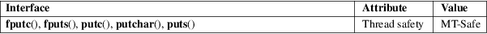

fputc, fputs, putc, putchar, puts − output of characters and strings
Standard C library (libc, −lc)
#include <stdio.h>
int
fputc(int c, FILE *stream);
int putc(int c, FILE *stream);
int putchar(int c);
int
fputs(const char *restrict s, FILE
*restrict stream);
int puts(const char *s);
fputc() writes the character c, cast to an unsigned char, to stream.
putc() is equivalent to fputc() except that it may be implemented as a macro which evaluates stream more than once.
putchar(c) is equivalent to putc(c, stdout).
fputs() writes the string s to stream, without its terminating null byte ('\0').
puts() writes the string s and a trailing newline to stdout.
Calls to the functions described here can be mixed with each other and with calls to other output functions from the stdio library for the same output stream.
For nonlocking counterparts, see unlocked_stdio(3).
fputc(), putc(), and putchar() return the character written as an unsigned char cast to an int or EOF on error.
puts() and fputs() return a nonnegative number on success, or EOF on error.
For an explanation of the terms used in this section, see attributes(7).

C11, POSIX.1-2008.
POSIX.1-2001, C89, C99.
It is not advisable to mix calls to output functions from the stdio library with low-level calls to write(2) for the file descriptor associated with the same output stream; the results will be undefined and very probably not what you want.
write(2), ferror(3), fgets(3), fopen(3), fputwc(3), fputws(3), fseek(3), fwrite(3), putwchar(3), scanf(3), unlocked_stdio(3)